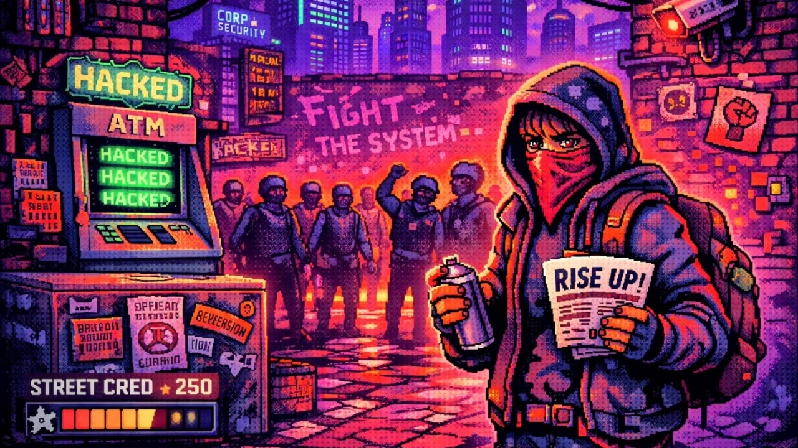

Progress Isn’t Power: Designing Systems That Measure Impact, Not Dominance
Part of New & Improved™ — A deep dive into creating a culturally relevant video game.

Progression Systems & Player Impact
Last week, I laid out the intent behind New & Improved™: a 2D pixel-art side-scroller built around cultural resistance rather than combat, accumulation, or domination. That first article focused on why this game exists at all. It was how I realized a desire to make something culturally engaged, meaningful, and still genuinely fun to play.
If Part 1 of this series was about intent, this week is about translation. Once I had a clearer sense of why I wanted to make New & Improved™, many additional issues surfaced immediately. How would I turn cultural intent into mechanics without reducing it to abstraction? How would I design progression systems that communicate meaning while still being readable, engaging, and, crucially, fun?
What follows isn’t a report on what’s “working.” It’s a snapshot of my thought process so far. It’s a rundown of some of the ideas I’ve iterated on, the assumptions I’m testing, and the places where theory will eventually have to give way to real players interacting with real systems.
Street Cred as Momentum
“Street Cred” may be the most recognizable system in the game, because it looks and acts a bit like currency. You earn it by completing subversive acts and sidequests. You spend it on supplies, access, or small tactical advantages.
But in concept, Street Cred isn’t wealth. It’s momentum.
I’ve been circling this idea repeatedly during the documentation process. Resistance isn’t about getting stronger. It’s about staying active. Street Cred exists to keep players moving. Use it to buy spray paint, secure hacking cards, and prepare for the next act, rather than stockpiling power.
One of the more deliberate (and potentially contentious) ideas in this system is what happens when the player is caught. A capture results in a full Street Cred reset. Not a partial loss. Not a temporary penalty. Zero. Kind of like permadeath without the death.
That harshness isn’t about punishing curiosity or experimentation. It’s about reinforcing fragility. Street Cred represents momentum and trust, and both can evaporate quickly under pressure. Repression doesn’t just slow resistance. It breaks it. I want players to feel that break, not just see it reflected in a smaller number.
At the same time, this is one of the areas most in need of careful prototyping. On paper, a full reset communicates consequence and raises the stakes of visible action. In play, it could just as easily feel demoralizing or unfair. The line between meaningful loss and player frustration won’t be found in documentation alone. But it should emerge from watching real people make decisions, fail, and decide whether to re-engage or walk away.
Design Note
Street Cred is designed to feel temporary and earned. But whether it feels motivating or punishing will only be clear through testing.
The Subversion Meter as Cultural Feedback
If Street Cred tracks momentum, the “Subversion Meter” is meant to track influence.
Rather than measuring player strength, it measures the city’s response to the player’s activity. As the meter rises, NPC behavior shifts, patrol patterns change, and the environment begins to reflect growing unrest. At higher levels, the city actually participates: locals shield the player, flashmobs appear, and graffiti spreads without direct input.
This system has gone through several conceptual iterations already. Early drafts treated Subversion as a straight progression bar, but that felt too linear. And cultural change is rarely linear.
The current framing treats Subversion as feedback, not reward. It is the city reacting to visibility over time. Importantly, the player doesn’t toggle these changes. They emerge.
Whether this reads clearly to players or feels arbitrary is still a question. I believe that the Emoji-based NPC feedback will help, but the UX around this system will need to be prototyped, even in paper form, to ensure players understand why the city is changing.
Design Note
The Subversion Meter is slow on purpose. But slowness without clarity can feel like nothing is happening.
Systems in Conversation
One idea I keep returning to in this design is that no system should stand alone.
Street Cred and Subversion are meant to feed each other. Street Cred enables action, action nudges Subversion, and rising Subversion makes future actions safer or more supported. Arrest breaks that loop, pushing both values backward.
In theory, this creates a rhythm rather than a ramp: act, build, risk, fall, recover.
In practice, this rhythm will live or die based on UX clarity. Players need to feel the relationship between these systems without constantly reading numbers. That means strong visual cues, NPC behavior that’s legible, and feedback that’s immediate, even when progress is slow.
Again, this is a space where documentation only gets you so far. These relationships will need to be felt, not explained.
Design Note
If players can’t feel systems interacting, they’ll treat them as separate chores.
Early Acts as Onboarding
The opening acts (flyering, stickers, posters, etc.) aren’t meant to be dramatic. They’re meant to be instructive.
Each one introduces a different form of risk and commitment. Flyering emphasizes timing. Stickers reward speed. Posters ask the player to stay visible longer. Mini-games add friction without complexity.
These acts are designed to teach the core idea that visibility has consequences.
At this stage, I’m less concerned with whether these mini-games are “fun” in isolation, and more concerned with whether they communicate tension. Fun can be tuned, but it’s difficult to shoehorn meaning into something just for the sake of it.
That said, these interactions will absolutely need iteration. What feels tense in my mind may feel slow in play. What feels readable in my documentation may feel confusing in motion.
Design Note
Good UX doesn’t emerge from intention alone. It comes from watching people misunderstand what you thought was obvious.
Where This Still Needs Proof
A lot of what I’ve outlined here rests on assumptions. I’d like for players to read the momentum they achieve as fragile. I want players to interpret city behavior as feedback. And I hope that loss feels meaningful rather than unfair.
Those assumptions need to be challenged early and often.
Prototyping these systems will be critical. Watching players engage, fail, recover, or disengage will shape how harsh the penalties are. All of this will show how visible feedback needs to be, and how much friction is tolerable.
Looking Ahead
With some of the progression systems sketched out, the next layer to tackle becomes space, and the city itself becomes the canvas. Next week, I’ll explore how district layouts communicate control, visibility, and opportunity for resistance, and how level design becomes a political language of its own.
Because in New & Improved™, where you act matters just as much as the acts themselves.
Page formatted by Written & Formatted. © Tim Samoff.